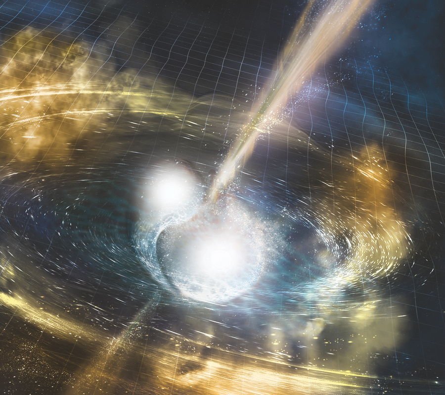

The 2018 UWM Research Magazine features an article describing the role of the CGCA in the discovery of gravitational waves from colling black holes in 2015, work which was awarded the 2017 Nobel Prize in Physics.
The article also discusses the role of the CGCA in the multi-messenger (gravitational waves and various wavelengths of light) discovery of colliding neutron stars in 2017.

Image credit: NSF/LIGO/Sonoma State University/A. Simonnet